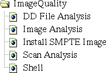

Proprietary to General Electric
Direction 5114043-800, Rev# 9
LightSpeed 3.X Service Methods (Advanced)
Proprietary to General Electric |
Illustration 1: Image Quality Icon
Illustration 2: Image Quality Menu (Advanced)

Use the ImageQuality menu to access the following tools and diagnostics:
Use to view and analyze the diagnostic data files.
Use to analyze the image quality of the system.
Installs the SMPTE (Society of Motion Picture and Television Engineers) test pattern into the ImageWorks Browser as Exam 1000. Use this test pattern to set up display monitors and filming cameras. This program also installs sample QA (Quality Assurance) images that show the typical image performance capability of the system.
Enables you to view and analyze scan data and plot cal vectors from scandata.
Presents a window that enables you to enter IRIX and UNIX commands, start scrips that perform a series of commands, or start programs. Press <ALT>-<F12> to exit the shell when it is no longer needed.